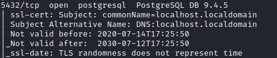

PostgreSQL
PostgreSQL is an open source RDBMS, typically running on TCP ports 5432 or 5433.
Default user is "psql" or “postgres”
Default password is "psql" or “postgres”
install PostgreSQL client Psql
daniele@linux:# apt install postgresql-client-common
connect
daniele@linux:# psql -h <TargetIP> -p <Port> -U <UserName>